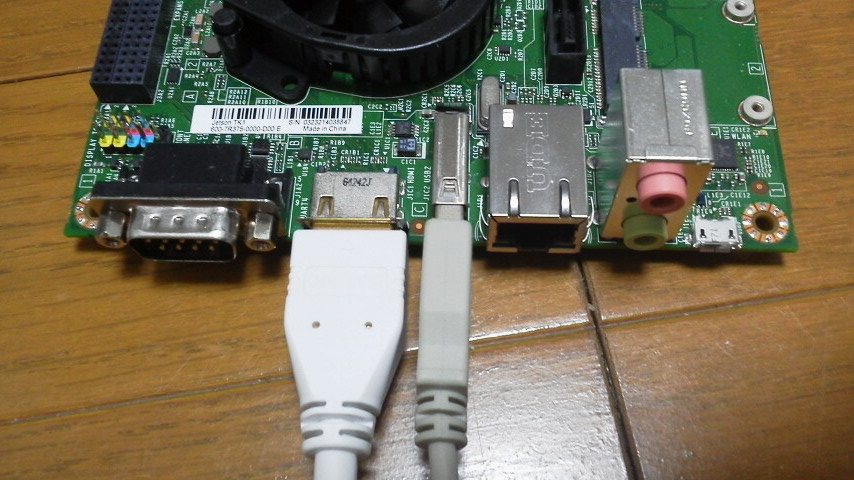

Using Jetson TK1 like PC

This is simplest way to login if everything work fine.
Requirement:
- Display with HDMI input
- USB keyboard
Instruction:
- Connect USB keyboard and HDMI dispaly to Jetson tk1
- Connect AC adapter to Jetson tk1
Jetson boot as soon as you connect AC adapter.
- Login as username:ubuntu/password:ubuntu
Desktop don't start at the time.
Go to next step - Preparing System
Top